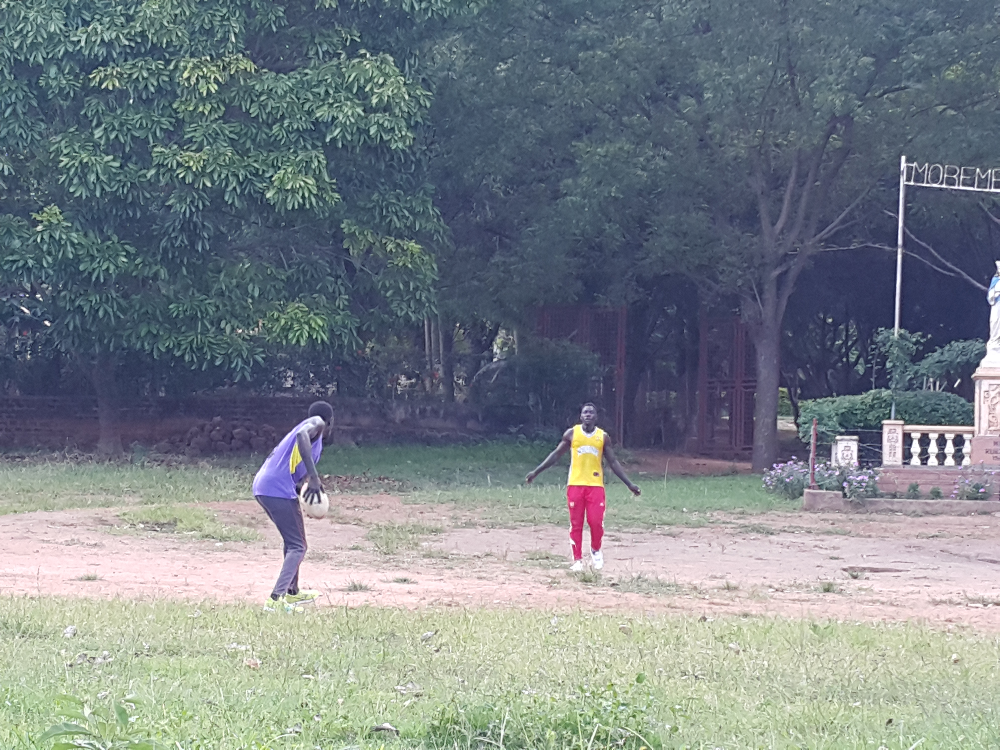

Places for leisure activities
Lots of facilities built with the main intent of providing leisure exist in this town and the fun filled days can’t be actually fun without one or two of these places checked in,
There’re places that offer tours sand bathing, date nights, cultural exhibition and there are also places that offer night life like night dance, drinks, games and so on.
Green oasis hotels and tours
Besides the comfortable accommodation, green oasis provides actually the widest range of leisure activities including tours, cultural exhibition, meals, hosting seminars and outings, date nights, and so much more, it has the most impressive view of the great Oret hill because of its location in Kubwor. Detailed information can be got from their official website
Bamboo Sports Club
This offers night dance and it is the most popular place for night dances and enjoyment to the peak of the night life of Kalongo. It is located adjacent to the new Taxi park, for a detailed information, the manager can be contacted on WhatsApp directly. click here to send a message on WhatsApp
Mountain view
This provides night dances, drinkups, pool games, live soccer television, pork and so much more, it is located along Kitgum road, the management can be contacted on the numbers yet to be uploaded on this site.
Accommodation
Golden star lodge
It is located just on the opposite side of the road to bamboo sports club. It provides lodge services with two classes; singles (not self-contained) and doubles (self-contained) The management can be contacted on the address yet to be uploaded on this site.
Lim Welo lodge
This is located in Akado south and it provides bedrooms at two classes of prices. The management can be contacted on the numbers which are yet to be updated on this site.
Sports activities
Volleyball
This is one of the most played by holiday makers and Kalongo Is best known for raising the best athletes in this game. The court is located adjacent to the mission and just in the middle between the three primary schools Dr. Ambrosoli, Kalongo primary and St. Theresa girl’s school.
Football

This obviously is the most popular game played since there are a lot of small football clubs as low as at every parish level. The main club is Kalongo united football club which has been the main football icon for quite along time already. The major pitch is located besides the airstrip. Other football clubs include, Kubwor Sc. Vision Fc. And a lot more yet to be updated on this site. Attached are some of the images taken before, during and after the friendly matches they have been holding among themselves.
Athletics
This is mostly held by the primary and the secondary schools in particular seasons of the year. It is least dominant among the sports activities in the place.
Rugby
This game is not so popular. Regardless, there is a small team of former stars from the great secondary schools like; Layibi College and Gulu high school where rugby is played. The first time this game was played in Kalongo was in 2015 and the spectators were really thrilled by the way the game seemed to be so rough. So far so good.
In Kalongo there are a lot of sports activities carried out by the youth and it involves the following mentioned in no particular order;